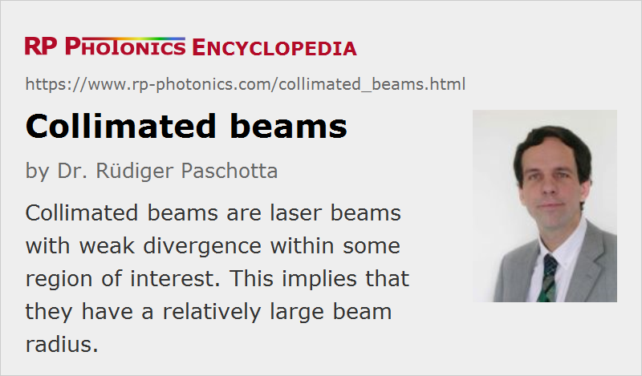

Collimated Beams
Definition: laser beams with weak divergence
German: kollimierte Strahlen
How to cite the article; suggest additional literature
Author: Dr. Rüdiger Paschotta
A collimated beam of light is a beam (typically a laser beam) propagating in a homogeneous medium (e.g. in air) with a low beam divergence, so that the beam radius does not undergo significant changes within moderate propagation distances. In the simple (and frequently encountered) case of Gaussian beams, this means that the Rayleigh length must be long compared with the envisaged propagation distance. For example, a 1064-nm beam with a 1-mm beam radius at its beam waist has a Rayleigh length of ≈ 3 m in air, so that it can be considered as being collimated within a normal laboratory setup. Note that the Rayleigh length scales with the square of the beam waist radius, so that large beam radii are essential for long propagation distances.
For beams with non-ideal beam quality, the Rayleigh length is effectively reduced by the so-called M2 factor, so that the beam waist radius needs to be larger for a beam to be collimated.
When describing a collimated beam with light rays, it consists of essentially parallel rays only. However, the ray picture cannot account for the phenomenon of beam divergence and is therefore of limited value.
How to Collimate a Beam
A divergent beam can be collimated with a beam collimator device, which in simple case is essentially a lens or a curved mirror, where the focal length or curvature radius is chosen such that the originally curved wavefronts become flat. (Of course, the beam radius at the position of the lens or mirror should be large enough to obtain a low divergence.) Any residual divergence can be fine adjusted via the position of the lens or mirror along the beam direction. The collimation can be checked, for example, by measuring the evolution of beam radius over some distance in free space, via a Shack–Hartmann wavefront sensor, or with certain kinds of interferometers.
In fiber optics, one often uses fiber collimators. These are available both for bare optical fibers and for connectorized fibers, i.e., for mating with fiber connectors.

Collimated beams are very useful in laboratory setups, because the beam radius stays approximately constant, so that the distances between optical components may be easily varied without applying extra optics, and excessive beam radii are avoided. Most solid-state lasers naturally emit collimated beams; a flat output coupler enforces flat wavefronts (i.e., a beam waist) at the output, and the beam waist is usually large enough to avoid excessive divergence. Edge-emitting laser diodes, however, emit strongly diverging beams, and are therefore often equipped with collimation optics – at least with a fast axis collimator, largely reducing the strong divergence in the “fast” direction. For fibers, a simple optical lens may often suffice for collimation, although the beam quality can be better preserved with an aspheric lens, particularly for single-mode fibers with a large numerical aperture.
Questions and Comments from Users
2020-05-22
What is the smallest possible collimated laser beam diameter?
Answer from the author:
That depends on the optical wavelength and on the propagation distance over which it needs to be collimated. For example, if you need a 1064-nm beam to be collimated over a length of 1 m, you want its Rayleigh length to be of the order of 1 m (or longer), which implies a Gaussian beam diameter of 1.2 mm (or larger).
Here you can submit questions and comments. As far as they get accepted by the author, they will appear above this paragraph together with the author’s answer. The author will decide on acceptance based on certain criteria. Essentially, the issue must be of sufficiently broad interest.
Please do not enter personal data here; we would otherwise delete it soon. (See also our privacy declaration.) If you wish to receive personal feedback or consultancy from the author, please contact him e.g. via e-mail.
By submitting the information, you give your consent to the potential publication of your inputs on our website according to our rules. (If you later retract your consent, we will delete those inputs.) As your inputs are first reviewed by the author, they may be published with some delay.
See also: beam collimators, laser beams, Gaussian beams, beam divergence, beam radius, Rayleigh length, lenses, fiber collimators
and other articles in the category general optics
|  |
If you like this page, please share the link with your friends and colleagues, e.g. via social media: 


These sharing buttons are implemented in a privacy-friendly way! |
2020-03-14
What restrictions apply to how long the light from an extended, non-laser source like a tungsten lamp can stay collimated?
Answer from the author:
You can estimate that with the beam parameter product, using the source size (like a beam waist) and the divergence of outgoing light (light a beam divergence). You can reduce that product e.g. with one or more optical apertures, but at the expense of losing part of the optical power.
The length over which the diameter of the formed beam stays roughly constant can be estimated as the effective Rayleigh length, which can be calculated using the beam parameter product.